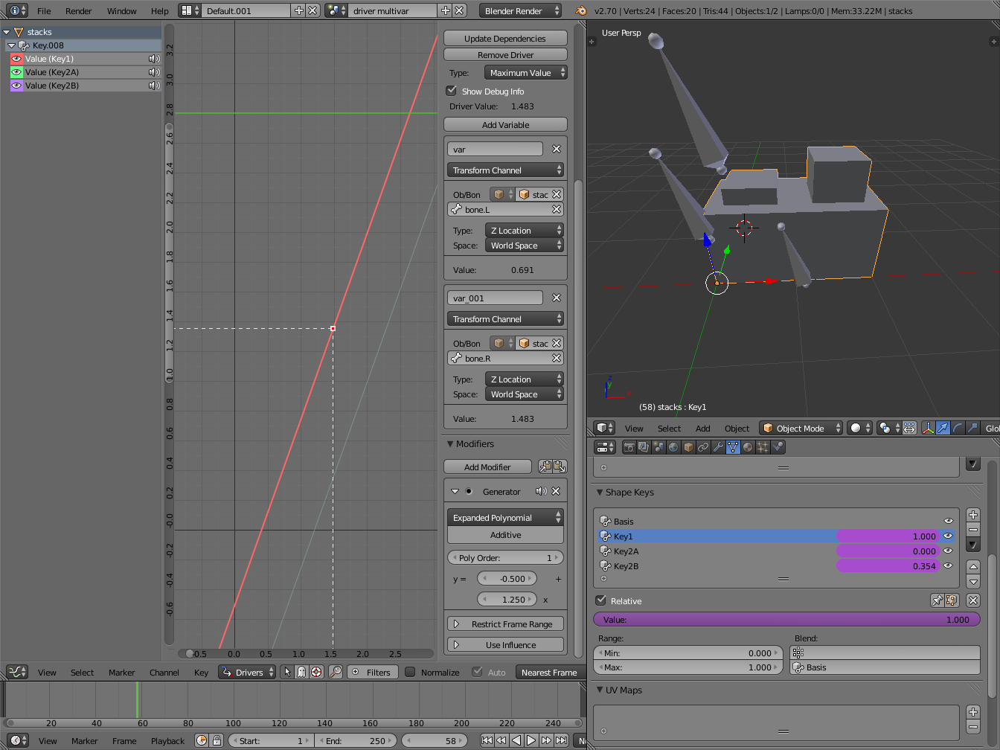
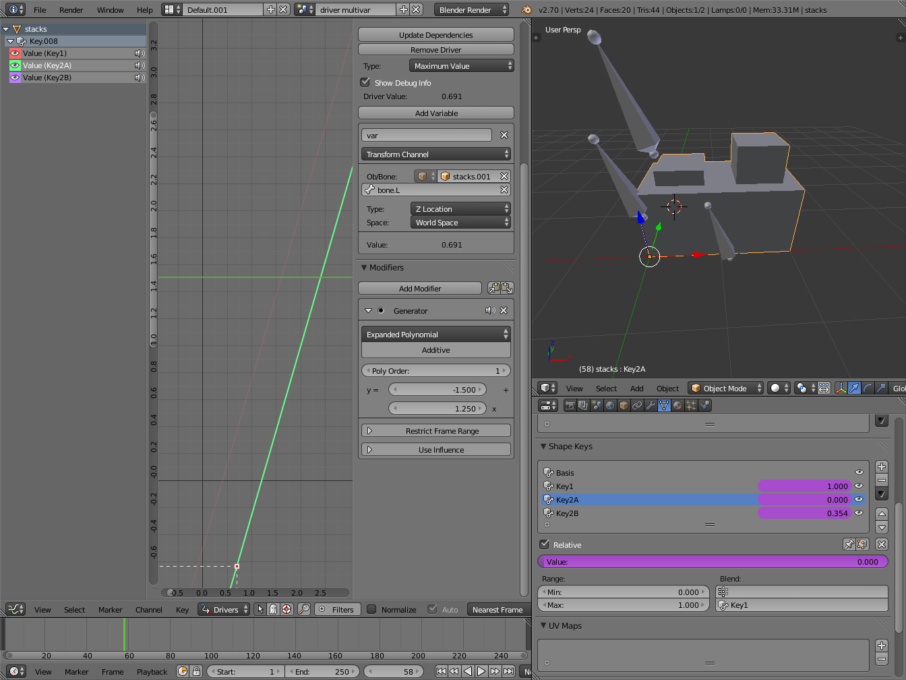
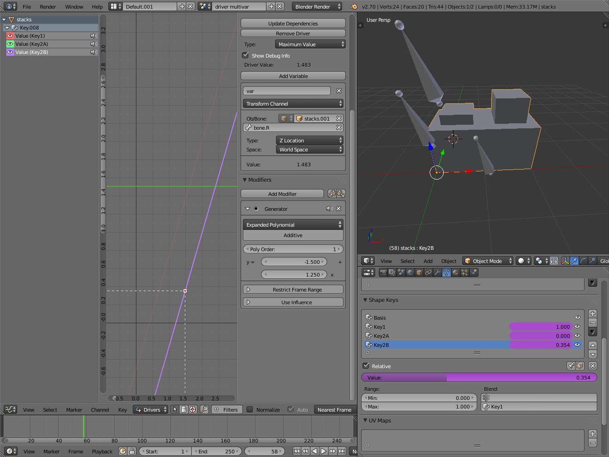
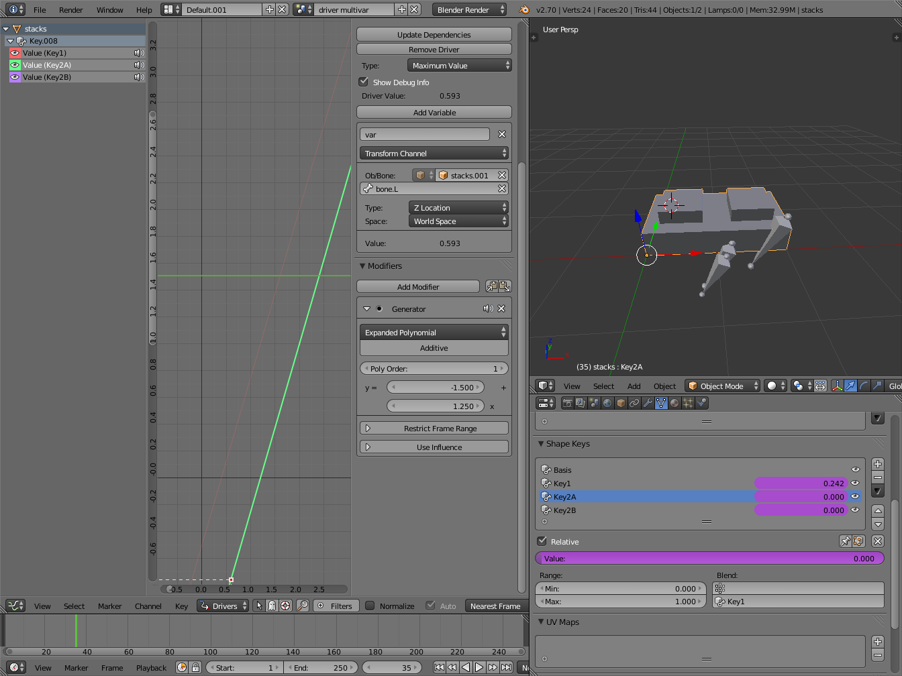
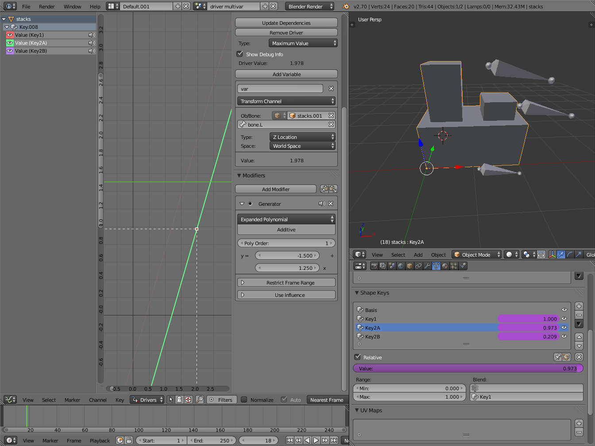

工作流程 & 范例¶
这里有几个驱动器范例和工作流程。
工作流程¶
变换驱动器¶
这个例子展示了如何建立一个变换驱动器。首先确保你用的是正交前视图。 Numpad5, Numpad1.
- 在物体模式，选择并复制默认立方体。
Shift-D，将 "Cube.001" 移到一边。 - 选中 "Cube.001" ，对 旋转 Y 属性添加单个驱动器。
- 打开 曲线编辑器 ，设置模式为 驱动器。
- 禁用图中绿框标记的 仅显示选中 按钮。
- 在通道区域，选择 Y欧拉旋转 属性。
- 按下
N打开属性区块，向下滚动到驱动器面板。 - 修改 类型 为 平均化值 ，这将返回所有驱动器变量的平均值。
- 修改驱动器变量设置：
- 类型 -- 形变通道
- 物体 -- Cube
- 变换类型 -- X 位移
- 变换空间 -- 世界空间
结束之后，从左向右移动 "Cube"时，"Cube.001" 会绕Y轴旋转。
范例¶
驱动器表达式¶
这里是一些使用脚本表达式设置驱动器值的范例。
物体旋转。
环绕一个点¶
这里对立方体的X位移和Y位移分别添加驱动器。
使用脚本表达式设置物体位置。
- X位移表达式
0 + (sin(frame / 8) * 4)(frame/8): 表示当前动画帧除以8，降低环绕速度。(sin( )*4): 返回 (frame/8)的正弦值，再乘以4，放大环绕半径。0 +: 用于控制环绕时 X 位移偏移量。
- Y位移表达式
0 + (cos(frame / 8) * 4)(frame/8): 表示当前动画帧除以8，降低环绕速度。(cos( )*4): 返回 (frame/8)的余弦值，再乘以4，放大环绕半径。0 +: 用于控制环绕时 Y 位移偏移量。
frame 与 bpy.context.scene.frame_current 等价。
驱动器命名空间¶
内置的驱动器函数和属性是一个列表。可以使用Python控制台显示出来。
>>> bpy.app.driver_namespace['
__builtins__']
__doc__']
__loader__']
__name__']
__package__']
acos']
acosh']
asin']
asinh']
atan']
atan2']
atanh']
bpy']
ceil']
copysign']
cos']
cosh']
..
下面的脚本用于添加一个函数到驱动器命名空间，接下来可以在表达式中使用 driver_func(frame)
import bpy
def driver_func(val):
return val * val # return val squared
# add function to driver_namespace
bpy.app.driver_namespace['driver_func'] = driver_func
{kind=link}
Drivers and Multiple Relative Shape Keys¶
下面的屏幕截图展示了结合形态键，骨骼和驱动器，来制作共用基型的多重链状相关形态键。尽管这样没有使用绝对形变键的单一时间计算来的方便，但却可以做出更复杂的形态键关系。

Key1需要处理来自两个骨骼的数值冲突。 |

Key2A有不同的生成器系数，所以会在骨骼的另外一段位置范围内才被激活。 |

Key2B和Key2A类似，但是被第二根骨骼控制。 |

当骨骼所有骨骼调低时，Key2B 和 Key2A 不被激活，Key1处于低影响。 |

|
作为基型的形态键的挤出面完全缩回，Key1的基底完全挤出，Key2A挤出左侧凸起，Key2B挤出右侧凸起。Key2A和2B都和Key1相关(如右下角的形态键面板所见)。
Key1的值通过一个包含两个变量的驱动器，与两个骨骼的位置属性绑定。每一个变量使用的都是骨骼的全局Z坐标，然后取最大值决定基底的挤出量。多项式生成器用于使基底的上表面与骨骼对齐。
Key2A的值与 Bone.L 的位置绑定。生成器的参数使得当Key1的值增加到1时，Key2A 才开始从0增长。这样的话，左侧凸起顶部会与 bone.L 一起移动(基本上)。
Key2B的值与 Bone.R 的位置绑定。它的生成参数和Key2A类似，右边的凸起会随着bone.R一起移动(基本上)。
由于bone.L 和 bone.R很容易出现位置差异，这意味着Key1的值会导致冲突，有时骨骼无法与对应的凸起对齐。如果Key1的驱动器使用平均值或最小值，而非最大值，来确定形变键的值， bone.L 和 bone.R 的“冲突”则会断然不同。用户可以视动画需求进行选择。